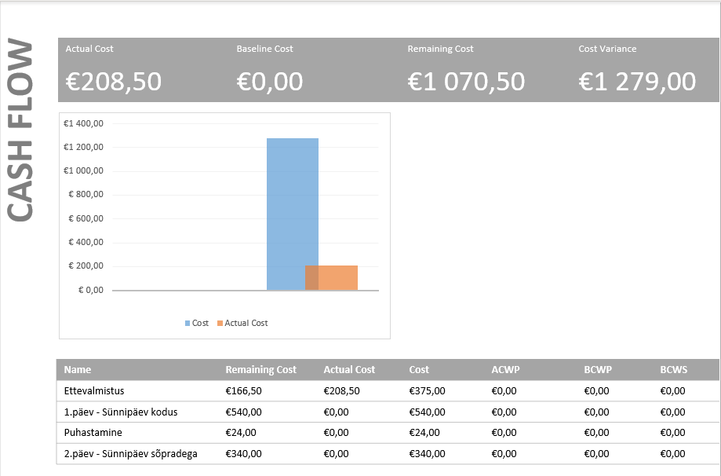
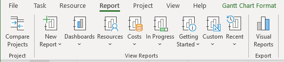
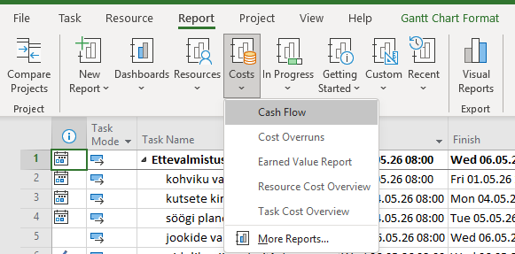

Mis on aruanded MS Projectis?
Microsoft Project võimaldab luua visuaalseid aruandeid ja diagramme,
mis näitavad projekti kulusid, edenemist ja ressursside kasutust.
Aruanded genereeritakse automaatselt projekti andmete põhjal.
Samm 1 — Ava Report vahekaart
Mine ülemisse menüüsse ja vali vahekaart Report.
Näed erinevaid aruannete gruppe:
Dashboards, Resources, Costs,
In Progress ja teised.

Samm 2 — Vali Costs → Cash Flow
Klõpsa nuppu Costs — avaneb rippmenüü järgmiste valikutega:
Cash Flow, Cost Overruns, Earned Value Report, Resource Cost Overview, Task Cost Overview.
Vali Cash Flow, et näha rahavoo diagrammi.

Samm 3 — Tulemus: Cash Flow aruanne
MS Project genereerib automaatselt rahavoo aruande.
Aruande ülaosas kuvatakse 4 põhinäitajat:
- Actual Cost (tegelik kulu): €208,50
- Baseline Cost (aluskulu): €0,00
- Remaining Cost (järelejäänud kulu): €1 070,50
- Cost Variance (kulu hälve): €1 279,00
Diagramm näitab tulpdiagrammina Cost ja Actual Cost võrdlust.

Samm 4 — Tabel aruandes
Aruande allosas on tabel, kus on näha iga põhiülesande kulud eraldi
koos veergudega: Remaining Cost, Actual Cost, Cost, ACWP, BCWP, BCWS.
- Ettevalmistus — Remaining: €166,50 / Actual: €208,50 / Cost: €375,00
- 1.päev – Sünnipäev kodus — Cost: €540,00
- Puhastamine — Cost: €24,00
- 2.päev – Sünnipäev sõpradega — Cost: €340,00